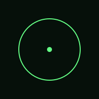

RETO ALEPH // 42
IV · RASTROS
estación 24 / 42
24
Capas
Hay dos capas. La hoja de estilo nombra un artefacto; el artefacto contiene metadata.
stage.css → ? → metadata

Pista
Lee primero CSS y luego el SVG como XML.
Esta numeración identifica la estación; no indica un orden obligatorio.